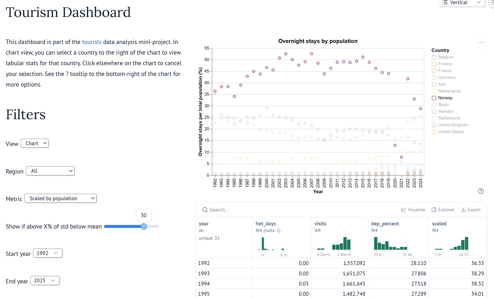
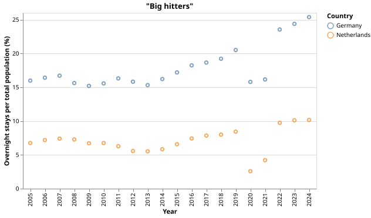
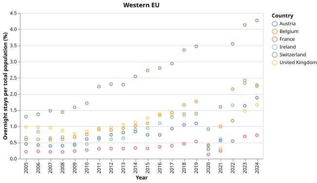
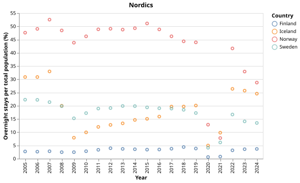
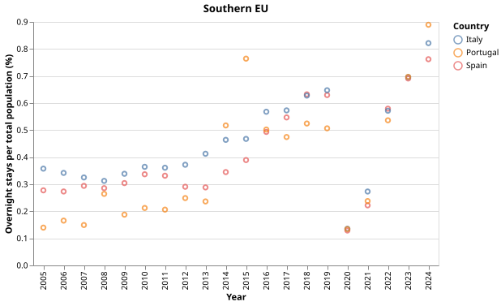
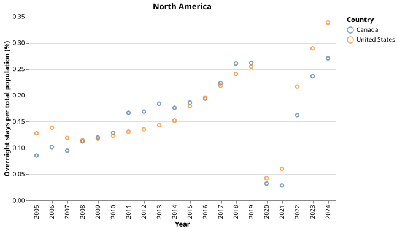
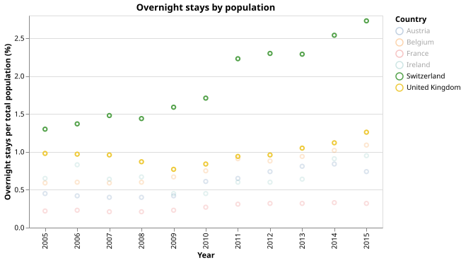
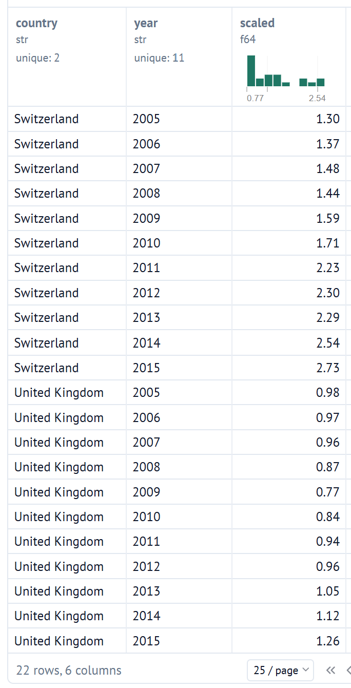
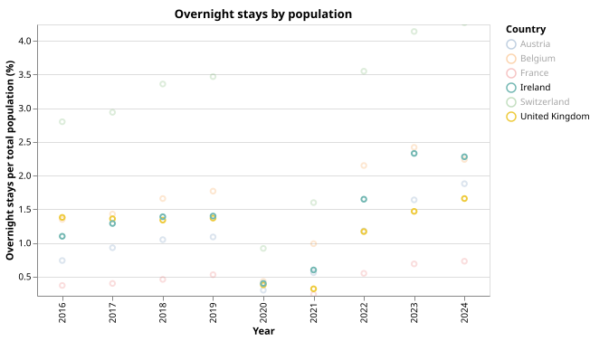
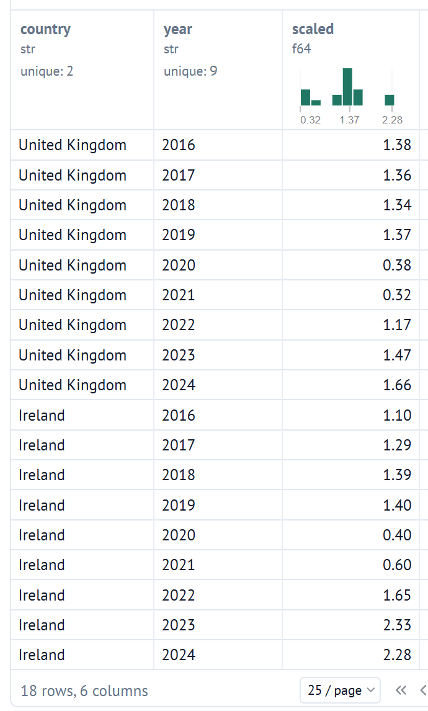

Amanda Frost
Data analysis and automation specialist with a flair for the humanities
Data analysis and automation specialist with a flair for the humanities
This project is still under active development and is subject to frequent changes.
Read the current report as a notebook or as a PDF, with commentary andanalysis in Danish and English.
This project is an introductory exploration of a tourist database that tracks overnight stays in Denmark by nationality, time period, country region, and other categories. The goal of this project is to gain a sufficient overview of this data, find insights, propose and test hypotheses, visualize and analyze results, and draw useful conclusions.
The scope is limited to annualized data for a representative sample of Global North countries. Besides the tourist data extract (current through 2025), there is also annual population data for each country via the OECD (current through 2024) and annualized climate proxy data (number of days over 30 degrees Celsius) from the ERA5 dataset (current through 2023).
See data for the raw and processed files.
The limiting starting year for the data is the tourist dataset, which extends back to 1992. Data normalization to exclude outlier years yields a start year of 2005.
The dashboard my be expanded in the future with additional functionality, but it is feature complete for now.

"Big hitters"

Western EU

Nordics (excluding Denmark)

Southern EU

North America

Financial crash (UK)


Additional impact of Brexit


NB: I use "visits" to refer to overnight stays for brevity, and "visitors" also signifies people within this set.
I decided to group the 17 countries in my dataset into 5 regions:
The "big hitters" are so named because, by portion of the total population, both countries far exceed the other western European countries and make visualization more difficult if they are grouped into the same region. The other groupings should hopefully make reasonable sense without further justification.
While the tourist data goes back to 1992, some countries such as Iceland, Portugal, and Ireland were clear outliers until the early 2000s due to how few people visited Denmark at the time. I decided to exclude these years entirely (for all countries) to avoid skewing the data and performing an incorrect analysis. For completeness and visualization purposes, those years are still included in the interactive dashboard.
To first find which year to start at though, I needed some process to exclude the outliers. My process for doing this was a bit loose. I wanted to use the standard deviation in some way as my primary indicator for the variability of the data. There are also other metrics worthy of consideration, but I wanted to be straightforward and just find some reasonable start year without considering which would best apply here.
I decided to do the following: I wanted to find some constant to multiply the standard deviation with such that the first year ("starting year") of the filtered dataset would be the year where all countries had visits that were at minimum that value below the mean or above. In other words:
Where y0 is the "starting year", c is a country from the set of countries C in my dataset, vyc is visits from that country in that year, μ is the mean, σ is the standard deviation, and x is what I want to find for my dataset to look reasonable.
If your eyes glaze over at the sight of the above expression, then the simplified version is:
For every year and country starting at some base year.
The one caveat is that this was an iterative process, where every iteration set a new potential starting year as the foundation for the data, if the previous iteration still had outlier years. This trial starting year would be the maximum of the minimum suggested years of the previous iteration, where the "minimum year" for each country is the first year that lies within the bounds defined by the above inequality.
The standard deviation and mean would then be re-evaluated for each country by only considering data from the trial starting year and above. These would set the new boundary (above some constant x multiple) for determining remaining outliers in the new iteration. When the year stabilized - i.e. went through one full iteration without increasing - then I would choose that as the definitive starting year for the full dataset.
In actuality, I played around with x in order to find a reasonable y0. I ended up settling on a value of 1.2 for x, which yielded a starting year of 2005. A sanity check confirms that this year seems like a reasonable start, as Iceland is the final outlier in 2004, and its visits jump more than an order of magnitude from that year to the next.
Speaking of, Iceland is one of those interesting countries that is worth highlighting, as I wanted to see if there were any economic trends I could infer from this data. The initial graphs I made charted the the overnight stays in proportion to the each country's population, and Iceland stands out as a country particularly impacted by the 2008 financial crash.
To be able to see just how much that event affected Icelandic tourism in comparison to related countries was enlightening.
It is also interesting to see the overall decline in tourism from the rest of the Nordics in this data. I don't think I can give any particular insight at this point, but one hypothesis is that the culture, architecture, and variety of experiences and activities to explore is more homogenous between these countries. And if prices become more competitive over time, where for the same price or less you can travel to more "exotic" destinations like Italy (or anywhere else), then there is less likely to be a draw to Denmark from the rest of the Nordics.
In fact, in a different project it would be interesting to look at the spatiotemporal variation in flight ticket prices (or full travel packages) from different starting countries.
For both the 2008 financial crash, as well as for Brexit, the UK seems to have been particularly (disproportionately) affected by these two events. The UK left the EU almost exactly when COVID hit, so there are clear visual indications of how UK tourism has been suppressed if one assumes that neighboring countries more or less suffered the same economic effects from COVID. That question is also interesting in itself, namely whether the tourist data can be used as a proxy to suggest which countries were more impacted by COVID.
UK financial crash
Brexit
One hypothesis I wanted to test, to the point I decided to find some basic data on it, was whether the ever escalating effects of climate change could play a role in deciding who travels where. As Denmark lies more north and has a reputation for being a more tolerable climate during summer, one would expect that tourism would increase from warmer, more southern climates like in Italy and Spain. Indeed, this is what we see:
While it would be nice to track the monthly or seasonal data to see if the summer months are where we comparatively see higher spikes from these countries, that is unfortunately outside the scope of this project. Regardless, I have the annual data for the number of days over 30 degrees (Celsius) for each country, and this can be used a proxy measure for seeing if there is a meaningful relationship between visits and the climate of each country.
The dependency ratio of a country is measured by the portion of people too old or too young to work compared to the working age population. For the dataset I used, the working age population was defined as being between 20 and 64 years old. For some countries in my dataset, this number increases by about 10 percentage points over the last 20 years. See Belgium, Finland, and France as examples. For others, this ratio either stays stable or even decreases. See Austria, Canada, and Norway as examples there.
What I am interested in however is the elderly dependency ratio, or the ratio of retired people compared to the rest of the population. This is increasing in all countries in my dataset, but by different amounts. I am curious if there is a correlation between the ratio of elderly people in a country's population and how popular Denmark is as a tourist destination.
However, the total dependency ratio could prove more useful comparatively, but that remains to be seen.
I was originally going to do this project with the classic pandas + matplotlib combo, but there have been some interesting developments over the last several years in the dataframe and data visualization space. The pandas API can be cumbersome and unintuitive, and libraries that accomplish similar goals have exploded in popularity recently, and for good reason.
Among them is Polars. It seems to be popular, standardized, and mature and feature complete enough to be a full replacement, and I found it extremely easy to start working with. So, I decided to instead learn enough of Polars to make this mini-project. The docs are excellent after all. And while the performance benefits are irrelevant for this project, this seems to be an all-round improvement on pandas by every possible measure, but especially the API.
Polars also has native support for Altair, so I used that library to render charts and plots.
I haven't yet needed to use these libraries so far, but for statistical analysis, I am considering one or more of the following:
See the images folder for screenshots of how the data was selected from each source.